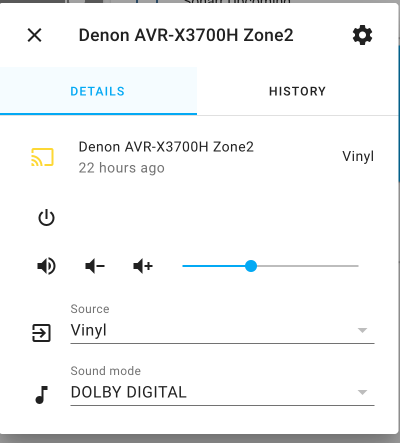
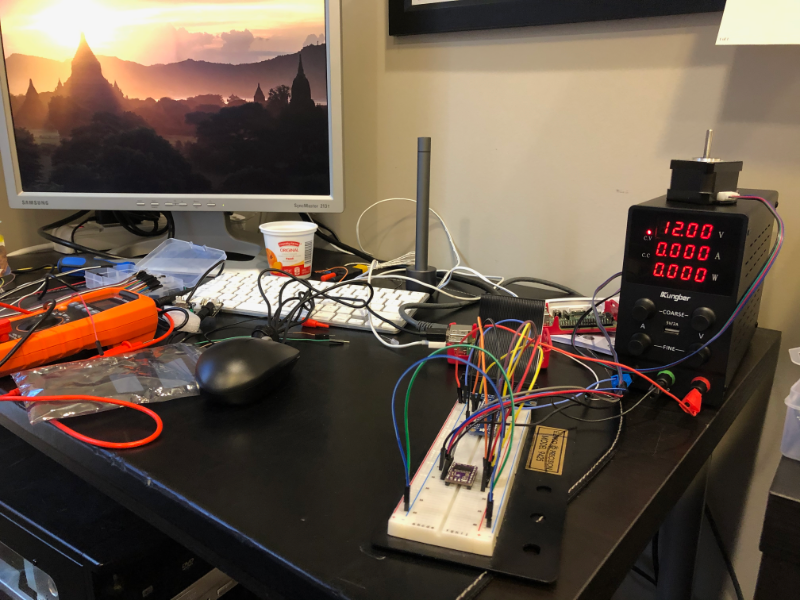

Always Learning
I haven’t blogged about my progress on Silver Saucer over the last month, but that doesn’t mean I haven’t been up to anything. I’ve continued to take the HTML, CSS, and Javascript on Coursera. I find CSS… difficult. Unfortunately, I also received an email from the course instructor that Coursera will be removing this course soon, so that figures. But it’s motivation to get it done.
One of the things I tackled a few weeks ago was making an applet to sit in the macOS menu bar to control the volume of my Denon receiver located in my home theater. The receiver’s Zone 2 controls the volume in my office, where I’m usually listening to records. It took 30 minutes to throw some code together using RUMPS to make the applet and the denonavr Python module to control the receiver.
That led me down a path of looking into making a hardware project to make a dial to control the volume. Adafruit has a great tutorial on building one using Circuit Python, but I don’t have a 3D printer (yet).
That led me into looking more into the denonavr Python module - which is also the same module that
powers Home Assistant. I’ve now reinstalled Home Assistant - it’s been a couple of
years since I last tried it out. Now I can just turn to a browser page I leave pinned and control my receiver from
there. I’ve spent a few days playing and tweaking Home Assistant to see most of my “smart” devices, but I’ve never been
all that into having a smart home (nor will you find any voice assistants here). Of course this has given me a dozen
ideas of things to build or integrate. But I think I still want to build a dial!

I also spent a few days doing a deep dive into Docker. I have a couple containers that I run on my NAS, but never really understood the right way to update or manage them. Now that I have a little more knowledge I realize how slick containers really are.
Finally, I was on vacation last week and started to tackle another project I’ve talked about with a friend for the last couple years. We need a pump (or pumps) programmed for a project. I had some old Raspberry Pi computers laying around and a year ago we quickly prototyped a solution. Unfortunately, we needed a more powerful pump - both in how it pumps and in power consumption.
I’ve been learning about circuits and electricity by watching a lot of YouTube videos and reading a number of books I’ve picked up over the years (especially on Humble Bundle) . I then went out and bought bench power supply unit (PSU) and multimeter for my workbench. I figured out how to power the breadboard with a 3.3v / 5v breadboard power supply first and then figured out how to use the PSU, too. It was kind of exciting to see a little blue LED light up the first time I got a circuit right:
Here’s a picture of my messy workbench below with the Pi hooked up to a breakout board which connects to the breadboard. Also connected to the breadboard is a DRV8825 motor controller which is connected to a NEMA step-motor.
In theory, I have everything hooked up correctly now to start prototyping. Now the hard part starts: Is the code wrong or the hardware hooked up incorrectly?!
